(省)，e = (E- 127),代入公式，得到:
My 梦
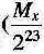 
魔数 0x5f3759df
2017-11-14 陈皓
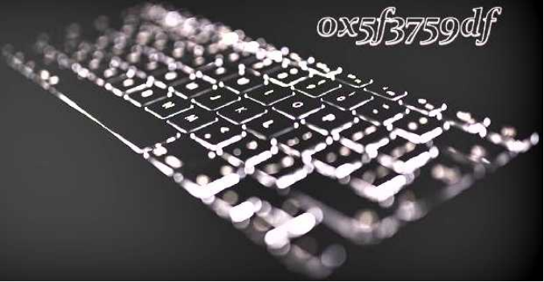
下列代码是在《雷神之锤III竞技场》源代码中的一个函数(已经剥离了 C语言预处理器的指令)。其 实，最早在2002年(或2003年)时，这段平方根倒数速算法的代码就已经出现在Usenet与其他论坛 上了。这段代码在程序员圈内引起了非常大的讨论。
float Q_rsqrt( float number )
long i; float x2, v;
const float threehalfs = 1.5F;
x2 = number * 0.5F;
y = number;
i = * ( long * ) &y; // evil floating point bit level hacking
i = 0x5f3759df - ( i » 1 ); // what the fuck?
y = * ( float * ) &!•
Y = y * ( threehalfs - ( x2 * y * y ) ); // 1st iteration
// 2nd iteration, this can be removed
y * ( threehalfs - ( x2 * y ♦ y ));
return y;
这段代码读起来完全不知所云，尤其是那个魔数0x5f3759c虬完全不知道是个什么东西，所以，注释里 也是What the ftjck。今天的这篇文章主要是想�∧憷戳私庖幌抡飧龊�数中的代码究竟是怎样出来的。
当然，它算的是近似值。只不过这个近似值的精度很高，而且计算成本比传统的浮点数运算平方根的算法 低太多。在以前那个计算资源还不充分的年代，在一些3D游戏场景的计算机图形学中，要求取照明和投 影的光照与反射效果，就经常需要计算平方根倒数，而且是大量的计算一对一个曲面上很多的点做平方 根倒数的计算。也就是需要用到下面的这个算式，其中的x,v,z是3D坐标上的一个点的三个坐标值。
y/x1 + y2 + z2
基本上来说，在一个3D游戏中，我们每秒钟都需要做上百万次平方根倒数运算。而在计算硬件还不成熟 的时代，这些计算都需要软件来完成，计算速度非常慢。我们要知道，在上世纪90年代，多数浮点数操 作的速度更是远远滞后于整数操作。所以，这段代码所带来的作用是非常大的。
计算机的浮点数表示
为了讲清楚这段代码，我们需要先了解一下计算机的浮点数表示法。在C语言中，计算机的浮点数表示 用的是IEEE 754标准，这个标准的表现形式为，把一个32bits分成三段。
•第一段占1bito表示符号位。代称为S (sign) o
•第二段占8bitso表示指数。代称为E (Exponent) o
•第三段占23bitsa表示尾数。代称为M (Mantissa) o
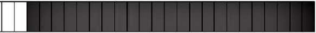如下图所示:
3130
Mantissa
然后呢，一个小数的计算方式是下面这个算式:
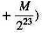
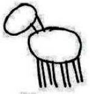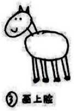
但是，这个算式基本上来说，完全就是让人一头雾水，摸不着门路。对于浮点数的解释基本上就是下面这 张漫画里表现的样子。
怎样曲马
。■甬个••
下面，让我来试着解释一下浮点数的那三段表示什么意思。
•第一段符号位。对于这一段，我相信应该没有人不能理解。
•第二段指数位。什么叫指数？也就是说，对于任何数x,其都可以找到一个们使得2”<=x<=2”+\ 比如：对于3来说，因为2<3<4,所以*1。而浮点数的这个指数为了要表示0.00x的小数，所 以需要有负数，这8个bits本来可以表示0-255。为了表示负的，取值要放在［-127,128］这个区间 中。这就是为什么我们在上面的公式中看到的2(芯-12刀这一��了。也就是说，« = E-127,如果 « = 1,那么E就是128 To
•第三段尾数位。也就是小数位，但是这里叫偏移最可能好一些。这里的取值是从［0 -223］中。你可 以认为，我们把一条线分成223个线段，也就是8388608个线段。也就是说，把2"到2*】分成了 8388608个线段。而存储的M值，就是从2"到x要经过多少个段。这要计算一下，2"到x的长度 占2"到2"+,长度的比例是多少。
我估计你对第三段还是有点不僵，那么我们来举一个例子。比如说，对3.14这个小数。
•是正数。所以，S = 0
• (3.14 - 2) / (4 - 2) = 0.57,而 0.57 * 223 = 4781506.56,四舍五入，得到 M = 4781507。因为 有四舍五入，所以，产生了浮点数据的精度问题。
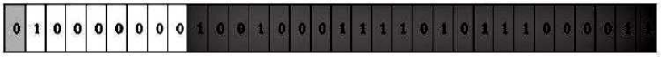
1*(1 + 0.5700000524520874) * 2
=3.1400001049041748046875
你看，浮点数的精度问题出现了。
我们再来看一个示例，小数0.55。
•是正数。所以，S = 0o
• 2刁 < 0.015 < 2一6。所以，n=-7.
• (0.015 - 2一7)/(2一6 - 2-7) = 0.0071875/0.0078125 = 0.92。而 0.92 * 223 = 7717519.36,四 舍五入，得到M = 7717519。
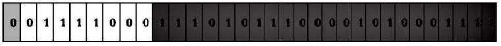
其中:
• 120 的二进制是 01111000
• 7717519 的二进制是 11101011100001010001111
返回过来算一下:
(1 + 0.919999957084656) * 0.0078125
=0.014999999664724
你看，浮点数的精度问题又出现了。
我们来用C语言验证一下:
int main() {
float x = 3.14;
float y = 0.015;
return 0;
在我的Mac上用lldb工具Debug ―下。
(lldb) frame variable
(float) x = 3.1400001
(float) y = 0.0149999997
(lldb) frame variable -f b
(float) X = 01)01000000010010001111010111060011
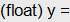0b001111000111010111000010100eilll
从结果上，完全验证了我们的方法。
好了，不知道你看懂了没有？我相信你应该看懂了。
简化浮点数公式
因为那个浮点数表示的公式有点复杂，我们简化一下:
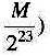
我们令，m =(告),e = (£-127)。因为符号位在y = 的两端都是0〈正数)，也就可以去
掉，所以浮点数的算式简化为：
(1 + m) * 2e
上面这个算式是从一个32bits二进制计算出一个浮点数。这个32bits的整型算式是:
比如，0.015 的 32bits 的二进制是：00111100011101011100001010001111,也就是整型的:
7717519 + 120 * 223
=1014350479
=0X3C75C28F
平方根倒数公式推导
下面，你会看到好多数学公式，但是请你不要怕，因为这些数学公式只需要高中数学就能看懂的。
我们来看一下，平方根数据公式:
等式两边取以2为基数的对数，就有了:
1昭2��)=一湛。g2④
因为我们实际上在算浮点数，所以将公式中的x和y分别用浮点数的那个浮点数的简化算式 (1+m)* Y替换掉。代入logO公式中，我们也就有了下面的公式：
log2(l + my) + ey
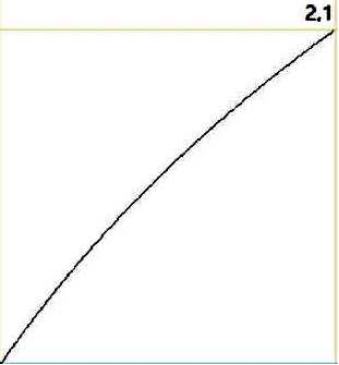因为有对数，这公式看着就很麻烦，似乎不能再简化了。但是，我们知道，所谓的她或是屿，其实是 个在0和1区间内的小数。在这种情况下，log2(l.x)接近一条直线。
0,1
0.0
那么我们就可以使用 个直线方程来代替，也就是:
log2(l + ni) m +
于是，我们的公式就简化成了:
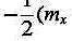
(省)，e = (E- 127),代入公式，得到:
My 梦
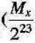 
移项整理一下，把。和127从左边，移到右边:
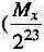My
再把整个表达式乘以223,得到:
My + &223
« =(也 + 8223) - -(<7 - 127)223
可以看到一个常数：一3俗一 127)223,把负号放进括号里，变成3(127-0)223,并可以用一个常量 代数R来取代，于是得到公式： ~
My + Eyl23 TR- ~(Mx + 风223)
还记得我们前面那个“浮点数32bits二进制整型算式” M + E * 223吗？假设，浮点数x的32bits的整 型公式是：厶=柘+ &223,那么上面的公式就可以写成：
代码分析
让我们回到文章的主题，那个平方根函数的代码。
首先是:
X = * ( long * ) &y; // evil floating point bit level hacking
这行代码就是把一个浮点数的32bits的二进制转成整型。也就是，前面我们例子里说过的，3.14的 32bits 的二进制是：01000000010010001111010111000011,整型是：1078523331。即 y = 3.14, i = 1078523331。
然后是:
i = 0x5f3759df - ( i » 1 ); // what the fuck?
这就是:
1 = 0x5f3759df -
也就是我们上面推导出来的那个公式:
代码里的 R = 0x5f3759df.
我们又知道，R = |(127-<7)2^,把代码中的那个魔数代入，就可以计算出来：。=0.0450465。这个
数是个神奇的数字，这个数是怎么算出来的，现在还没人知道。不过，我们先往下看后面的代码：
x2 = number * 0.5F;
y = * ( float * ) &i;
y = y * ( threehalfs - ( x2 * y * y ) ); // 1st iteration
// 2nd iteration, this can be removed
H y = y * ( threehalfs - ( x2 * y * y ))：
这段代码相当于下面这个公式:
弓，=Z/1.5 - 0.5��
这个其实是“牛顿求根法”，这是一个为了找到一个Hx)=0的根而用一种不断逼近的计算方式。请看下 图：
首先，初始值为X0,然后找到X0所对应的Y0 (把X0代入公式得到Y0 = f(X0)),然后在(XO.Y0) 这个点上做一个切线，得到与X轴交汇的XL再用X1做一次上述的迭代，得到X2,就这样一直迭代下 去，一直找到，y = 0时，x的值。
牛顿法的通用公式是:
于是，对于y = *来说，��固定的X (常数)，我们求y使得.一* = 0, f(y) = * f'fy)=芸。注意：f'(y)是，)关于y的导数。
代入上述的牛顿法的通用公式后得到:
i~x
-2
J
正好就是我们上面的代码。
整个代码是，之前生成的整数操作产生首次近似值后，将首次近似值作为参数送入函数最后两句进行精化 处理。代码中的两次迭代正是为了进一步提高结果的精度。但由于《雷神之锤III》的��形计算中并不需要 太高的精度，所以代码中只进行了一次送代，二次迭代的代码则被注释了。
相关历史
根据Wikipedia上的描述。《雷神之锤III》的代码直到QuakeCon 2005才正式放出，但早在2002年 (或2003年)时，平方根倒数速算法的代码就已经出现在Usenet和其他论坛上了。最初人们猜测是 《雷神之锤》的创始人John Carmack写下了这段代码，但他在回复询问他的邮件时否定了这个观点， 并猜测可能是先前曾帮id Software优化《雷神之锤》的资深汇编程序员Terje Mathisen写下了这段代 码。
而Mathisen的邮件里表示，在1990年代初，他只曾做过类似的实现，确切来说这段代码亦非他所作。 现在所知的最早实现是由Gary Tarolli在SGI Indigo中实现的，但他亦坦承他仅对常数R的取值做了一 定的改进，实际上他也不是作者。
在向以发明MATLAB而闻名的Cleve Moler查证后，Rys Sommefeldt则认为原始的算法是Ardent Computer公司的Greg Walsh所发明的，但他也没有任何确定性的证据能证明这一点。
不仅该算法的原作者不明，人们也仍无法确定当初选择这个“魔术数字”的方法。Chris Lomont曾做了个 研究：他推算出了一个函数以讨论此速算法的误差，并找出了使误差最小的最佳R值0x5f37642f (与代 码中使用的0x5f3759df相当接近)。1旦以之代入算法计算并进行一次牛顿迭代后，所得近似值之精度仍 略低于代入0x5f3759df的结果。
因此，Lomont将目标改为�苏以诮�行1-2次牛顿送代后能得到最大精度的R值，在暴力�人骱蟮��缱� 优R值为0x5f375a86,以此值代入算法并进行牛顿迭代，所得的结果都比代入原始值(0x5f3759df) 更精确。于是他说，"如果可能我想询问原作者，此速算法是以数学推导还是以反复试错的方式求�缋� 的？ ”
Lomont亦指�纾�64位的IEEE754浮点数(即双精度类型)所对应的魔术数字是 0x5fe6ec85e7de30dao但后来的研究表明，代入0x5fe6eb50c7aa19f9的结果精确度更高(McEniry 得出的结果则是0x5fe6eb50c7b537aa,精度介于两者之间)。
后来Charles McEniry使用了一种类似Lomont但更复杂的方法来优化R值。他最开始使用穷举搜索， 所得结果与Lomont相同。而后他尝试用带权二分法寻找最优值，所得结果恰是代码中所使用的魔术数字 0x5f3759dfo因此，McEniry认为，这一常数最初或许便是以"在可容忍误差范围内使用二分法”的方式 求得。
这可能是编程世界里最经典的魔数的故事，希望你能够从这篇文章中收获一些数学的基础知识。数学真是 需要努力学习好的一门功课，尤其在人工智能火热的今天。
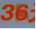 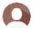 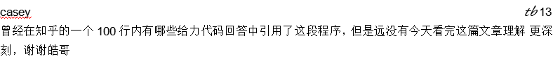 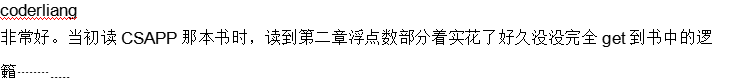 
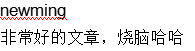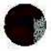 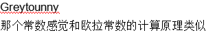
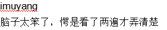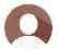
20ia-C=-M
I作者回复 那很不错了 20ia-C6-10
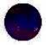
2OI3-Ca-23
I作者回复 不牛不牛 2OI3-Ca-29